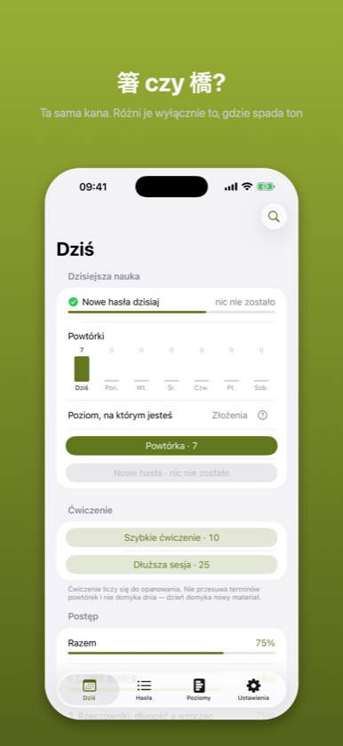
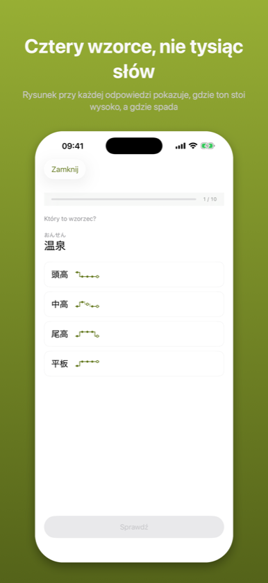
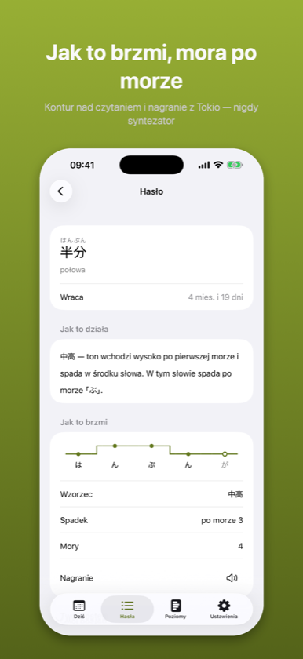

Kifuku: Akcent japoński起伏
Wymowa, intonacja, słuchanie
Wymowa, intonacja, słuchanie
Wkrótce w App Store
Aplikacja czeka na recenzję Apple. Strona opisuje wersję złożoną do sklepu.
Japoński ma warstwę, której kana nie zapisuje. 箸 i 橋 pisze się tak samo i nie są tym samym słowem – a różnica to reguła do nauczenia, nie lista do wykucia.



Kifuku uczy japońskiego akcentu tonicznego – warstwy języka, której kana nie zapisuje.
箸 i 橋 to obie はし. 雨 i 飴 to obie あめ. Nic w zapisie ich nie rozróżnia; robi to wyłącznie miejsce, w którym spada ton. Większość kursów wspomina o tym raz i idzie dalej, bo wygląda to na tysiące faktów do zapamiętania. Nie jest. To w większości reguły – i ta aplikacja jest zbudowana po to, żeby pokazać które.
Reguły – gdzie spada ton w słowie, którego nigdy nie widziałeś. Ta jedna mierzona jest wyłącznie na słowach spoza twoich powtórek, więc odpowiada na pytanie, którego pamięć nie podrobi.
Wzorce – który z czterech wzorców ma słowo: 平板, 頭高, 中高, 尾高.
Odmiana – co dzieje się z akcentem, gdy słowo się odmienia: 〜ます, 〜た, 〜ない, 〜て.
Słuch – gdzie spadek pada w nagraniu.
Można znać akcent każdego słowa ze swojej listy i dalej nie przewidzieć nowego. Aplikacja, która uśredni te cztery liczby w jedną, nie ma jak ci tego pokazać. Ta pokazuje.
Reguła bez liczby uczy fałszywej pewności. „Czasowniki mają akcent na przedostatniej morze" jest bezużyteczne, dopóki nie wiadomo, jak często – więc każda reguła pokazuje tu swoje pokrycie, policzone na słowniku 340 tysięcy haseł i widoczne dla ciebie, a nie schowane w kodzie.
Głos systemu nie obiecuje, że przeczyta 箸 jako 頭高, a 橋 jako 尾高 – a na tej różnicy stoi cała aplikacja. Dlatego nie ma tu syntezy mowy w ogóle, tylko nagrania mówcy z Tokio. Tam, gdzie nagrania nie ma, przycisk mówi o tym wprost, zamiast odtwarzać coś, za co nie ręczymy. To jedyne miejsce, w którym cisza jest uczciwsza od dźwięku.
Akcent nie należy do poziomu egzaminu. 箸 i 橋 pojawiają się pierwszego dnia i nie ma ich w żadnej liście N5.
Wszystko tutaj to standard tokijski – akcent słowników, radia i podręczników. Jest jednym ze standardów, a nie „japońskim". W Kansai wiele z tych słów ma inny akcent i nie jest to błąd w żadną stronę. Aplikacja mówi o tym na własnych ekranach, nie drobnym drukiem.
Słowa wracają terminem, bo są faktami, a fakty blakną. Reguły tak nie wracają – reguły się nie zapomina, tylko jej nie stosuje, a to widać w pomyłkach, nie w kalendarzu. Jedno i drugie chodzi tu innym trybem, celowo.
Wszystko działa na urządzeniu. Nic nie jest wysyłane, nic nie jest śledzone, a aplikacja działa z wyłączoną siecią. „Nie zbieramy danych" nie jest tu obietnicą, tylko opisem.
Poziomy 1 i 2 są darmowe w całości – razem z pierwszą regułą przewidującą, więc obie natury materiału widać przed decyzją. Jeden zakup odblokowuje poziomy 3–5. Bez abonamentu.
Źródła są podane w aplikacji: dane akcentowe z UniDic (NINJAL), nagrania ze zbioru wymowy Tofugu i WaniKani.
Powyższy opis jest tym samym tekstem, który stoi na karcie aplikacji w App Store – pochodzi z tego samego pliku.